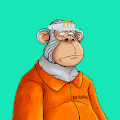
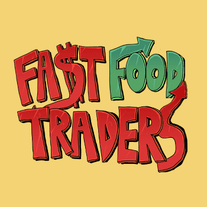
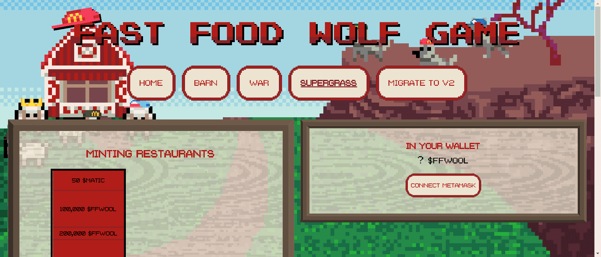
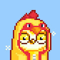
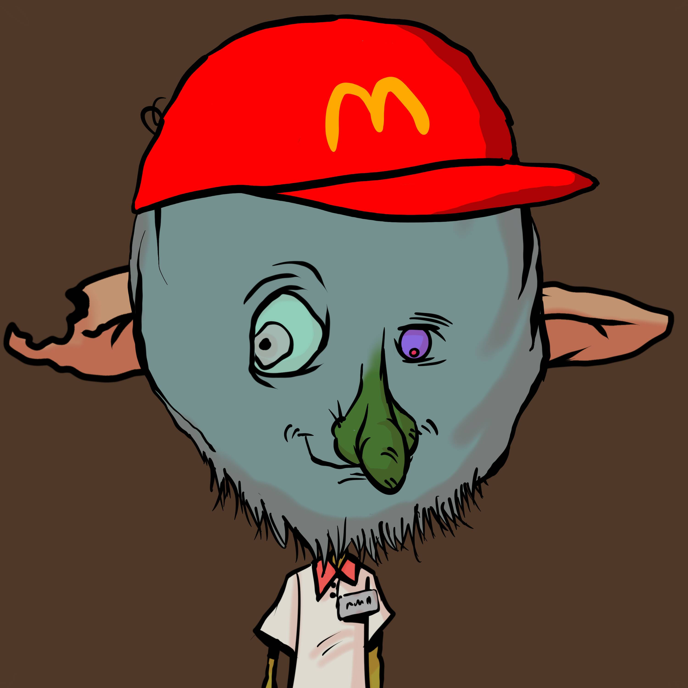
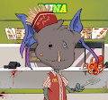
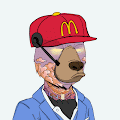
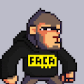

fairytownwtf ▶ 什么是仙境wtf？ Fairytownwtf 是一个 NFT（非同质代币）集合。存储在区块链上的数字艺术品集合。 ▶ 有多少fairytownwtf 代币？ 总共有 3,329 个fai
Fallout Crystals Fallout Crystals 包含一个最大供应量为 10,000 个的集合。它们可供每个 JF Genesis 持有者使用。水晶可以应用于您的 JF Genesis 以创建一个全新的“Fallout”版本的 Freak。 15,000
Fallout Freaks Official Collection 丛林怪胎： 辐射怪胎 15,000 名进化怪胎的集合，他们因大量暴露于宇宙中最稀有的放射性晶体而遭受副作用。 Fallout Freaks 由 5,000 个前所未见的 Fallout 测试对象和 10,000 个 Fallout Crystal Freaks 组成。
Familiar Feelings ▶ 什么是熟悉的感觉？ Familiar Feelings 是一个 NFT（Non-fungible token）集合。存储在区块链上的数字艺术品集合。 ▶ 有多少熟悉的感觉代币？ 总共
Familiars for Adventurers 欢迎疲惫的旅行者，挑选这片土地上最可爱的宠物。这将是你历经风雨的陪伴！记住，不要害怕，因为熟悉的面孔总是在附近。 Loot 项目冒险家的强大魔宠合集。
Family Names V3 ▶ 什么是姓氏 V3？ Family Names V3 是一个 NFT（不可替代令牌）集合。存储在区块链上的数字艺术品集合。 ▶ 有多少个姓氏 V3 代币？ 总共有 82 个 Family Names V3 NFT。目前
Famous Ape Movie Club Officiall 名猿电影俱乐部里到处都是表演者，有工作，过着充实的生活的猿！这是一个长期的元界项目，旨在与这些有价值的猿类中的每一个在每一个转折点建立一个广
Fancy Bears Metaverse Fancy Bears Metaverse Fancy Bears Metaverse 是以太坊区块链上 8888 个以编程方式生成的化身的动态 NFT 集合。熊喜欢游艇、良好的氛围——还有亲爱的。所有的女孩都喜欢花式熊！ 我们发明了 Trait Swa
Fancy Foxes V2 没有不和谐。暂时没有路线图。只有 2222 只花式狐狸在以太坊区块链上令人不寒而栗。 ▶ 什么是 Fancy Foxes V2？ Fancy Foxes V2 是一个 NFT（不可替代令牌）集合。存储在区
FancyBears Metaverse Official Fancy Bears Metaverse 是以太坊区块链上以编程方式随机生成的 NFT 集合。由 Fanadise 创建的系列仅适用于社交媒体、名人和娱乐——当然还有很多熊！Fancy Bears 以前所未有的方式
FancyBirds Official FancyDAO 首次玩并赚取游戏的 Fancy Birds Genesis 收藏！ 立即加入！繁殖，种族，竞争和赚钱！ Fancy Birds 是 Fancy Studios 创建的第一款 NFT Play and Earn 游戏。飞行、繁殖和竞争，成为周围最花哨的鸟！
Fantasia's World - P2E P2E - 免费薄荷 ($MANA) / 2500 供应 欢迎来到幻想曲的世界，一个由梦幻般的想象力创造的 P2E 世界！质押赚取 $MANA 温露？薄荷出炉后不久，请查看推特以获取更新。整个系列
fantasy and daily life 梦想，继续前进，直到你实现它。::: NFTworld 项目总监 /Multi Artist /NFT ▶ 什么是 fantasy and daily life？ fantasy and daily life 是一个 NFT（不可替代令牌）集合。存储在区块链上的数字艺
Fantasy7 NFT Official 7,777 个独特的动漫角色，灵感来自历史上最流行的游戏之一，为您带来独一无二的虚拟世界。 ▶ 什么是 Fantasy7 NFT 官方？ Fantasy7 NFT Official 是一个 NFT（非同质代币）集合。存储
FantasyOfficial Fantasy NFT 是由 Fantasy NFT Studio 中的一组艺术家创建的 10,000 个 PFP 集合。作为周杰伦的粉丝，成员们想为所有的周杰伦粉丝和中国NFT爱好者打造一个WEB 3.0会员和福利的
Fanzone.io Sports Club 加入世界上最伟大的体育俱乐部！Fanzone Sports Club 是您将梦想变为现实的地方，您可以与您最喜爱的体育传奇人物和最有影响力的运动员一起解锁独特的体
Far Fetched Labs Original 4,614 位疯狂科学家的集合，其中包括 10 位天才科学家，他们生产用于未来实验的小瓶代币。这就是科学发生的地方。Far Fetched Labs - 让我们走得更远！ ▶ 什么是 Far Fetched
Farmers Marketverse Patrons Farmers Marketverse 由 5,000 名独特的顾客组成. 从农民、greenthumbs、厨师、家庭厨师、9 到 5 岁以及自由精神。这些顾客带着对新鲜、本地和有机选择、强大的社
Farmlands biz 收集独特的农田。每个农田是一组 9 个随机生成的瓦片。瓷砖的独特性各不相同。 10,000 个独特而美丽的农田 ▶ 什么是 Farmlands biz？ Farmlands biz是一个 NFT（非同质代
Farsite Blueprints 欢迎来到 OpenSea 上的 Farsite 蓝图主页。发现这个系列中最好的项目。 欢迎来到躁动的宇宙，一切都归玩家所有，由革命性的 cNFT 协议增强的分布式账本得到保证。 每个游戏
Farsite Blueprints 欢迎来到 OpenSea 上的 Farsite 蓝图主页。发现这个系列中最好的项目。 欢迎来到躁动的宇宙，一切都归玩家所有，由革命性的 cNFT 协议增强的分布式账本得到保证。 每个游戏
fasfafasfd 前 2222 个虫洞可以免费领取。完整生成的集合将于 2022 年 6 月 6 日公布。 ▶ 什么是 fasfafasfd？ fasfafasfd 是一个 NFT（Non-fungible token
FashionableEggDragons 正在创建一个 EggDragon 集合。我们正在努力让更多人了解 NFT 的美妙和乐趣以及支持它的技术。我们不时赠送 NFT 礼物。我们还发布了一个生成集合。 ▶ 什么是时尚蛋龙？
Fast Food Alpacadabraz 快餐 ALPACADABRAZ 是一种独特的羊驼衍生亚种，已转变为快餐工人。每一个都非常相似，但带有明显的麦当劳风味。所有 9000 只羊驼的精髓将永远以 jpeg 的形式存在于区块链上
 Fast Food Apes* Fast Food Apes 是一个独家的 NFT 项目，拥有 1.000 只独特的猿。 它们融合了稀有和真实的艺术，并由持有人的特殊实用程序支持。我们正在创建一个无与伦比的社区，持有者
Fast Food Azuki 一个有趣的系列，灵感来自快餐模因和 Azuki。该项目是对 OG Azuki 的模仿，不隶属于 Azuki 官方收藏 ▶ 什么是快餐小豆？ 快餐 Azuki 是一个 NFT（非同质代币）集合
Fast Food BEANZ 一个有趣的系列，灵感来自快餐 meme 和 Azuki BEANZ。该项目是对 OG BEANZ 的模仿，不隶属于 Azuki BEANZ 官方收藏 ▶ 什么是快餐BEANZ？ 快餐 BEANZ 是一个 NFT（非同质代
Fast Food Doge NFT 两个炸锅比一个好，油炸、汉堡翻转的快餐爱好者与 The Doge NFT（互联网上最知名的模因的所有者！）合作，释放了新雇用的快餐狗。 Fast Food Doges 是由 1,696 个独特生成
Fast Food Frens Collection 想成为独家炸锅？获得快餐爱好者或快餐总督并加入煎炸崇拜。 ▶ 什么是快餐食品系列？ Fast Food Frens Collection 是一个 NFT（Non-fungible token）集合
 Fast Food Traders 成为快餐商。加入快餐大战。 ▶ 什么是Fast Food Traders？ Fast Food Traders是一个 NFT（不可替代代币）系列。存储在区块链上的数字艺术品集
 Fast Food Wolf Game Restaurants FFWG ▶ 什么是快餐狼游戏餐厅 FFWG？ 快餐狼游戏餐厅 FFWG 是一个 NFT（非同质代币）集合。存储在区块链上的数字艺术品集合。 ▶ 快餐狼游戏餐厅FFWG代币
 fastfoodbirds 5000 只快餐鸟筑巢在以太坊区块链上。我们来这里是为了翻转汉堡和薯条！ 这是一个 Moonbirds 衍生项目，与 Moonbirds_xyz 项目无关或附属。FFB 是您见过的 5,000 名最努力的工人。我
FastFoodermen 你好！¡！我们是 6969 名快餐店员 嗯，好看的图片，你应该买一些！¡！ ▶ 什么是快餐食品系列？ FastFoodermen 是一个 NFT（Non-fungible token）集合
 FastFoodGoblins ▶ 什么是快餐妖精？ FastFoodGoblins 是一个 NFT（非同质代币）集合。存储在区块链上的数字艺术品集合。 ▶ 有多少个 FastFoodGoblins 代币？ 总共有 109 个 FastFoodGoblins NFT。目前 2 位所有者的钱
 FastFoodGoblins.wtf ▶ 什么是 FastFoodGoblins.wtf？ FastFoodGoblins.wtf 是一个 NFT（不可替代令牌）集合。存储在区块链上的数字艺术品集合。 ▶ 有多少 FastFoodGoblins.wtf 代币？ 总共有 9,999
 FastFoodOkayBears 4444手绘，坏掉了在快餐店工作的好熊们！ ▶ 什么是快餐OkayBears？ FastFoodOkayBears 是一个 NFT（Non-fungible token）集合。存储在区
Fat Ape Babies Club 加入胖猿俱乐部！27 分钟售罄9,999 只 Fat Apes💯 拥有超过 5,000 位主人 Fat Ape Babies Club 是通过将两只 Fat Ape 一起繁殖而实现的生成集合。父母越稀有，宝宝的稀有
Fat Ape Rocket Crew Fat Apes 是在 Polygon 区块链上创建的独特 NFT 收藏品。是的多边形！！！最后是一个关于多边形的优秀项目。每只肥猿都是由 AI 层代精雕细琢而成 10000 的总供应量是硬编码在
 Fine-Ass CryptoApes (FACA) FACA 或 Fine-Ass CryptoApes 是 1,800 个随机生成的像素猿字符的有限集合。每个 FACA 都是独一无二的，具有几个共同定义其稀缺程度的属性。这是我们工厂生产的唯一一批。 FACA (Fine-Ass CryptoApes) 是一
Flooting Grooves X Cantaloupe Island FLOOTING GROOVES是 Pearce van der Merwe 的独奏项目 - 一位音乐家/制作人，他喜欢将长笛和其他乐器与酷炫的电子效果相结合，从而产生愉快的感觉和更深层次的意识状
Flooz GEN F V2 Flooz World 推出 Gen-F。 成为全球时尚创造者社区的一员，获得独家内容、一流的 Web 3.0 工具、活动和蓬勃发展的元界生态系统 通过扎里亚人民的共同努力，一个新
Flossing Doggie Club 欢迎来到 Flossing Doggie 俱乐部 #NFT 系列。 你会发现在这个世界和其他世界各地都有有趣的人在玩 Doggie Flossing。 当有下降时，您会首先在 twitter 上发现 - 在 @FlossingDoggie 上关注&h
Flower Fam - EDITION LIMITED Flower Fam是关于传播和平与繁荣的。 我们在我们独特的 P2E 生态系统 Oasis 的帮助下做到了这一点。 在这里，您可以与志同道合的人联系，享受美好时光，放松身心，